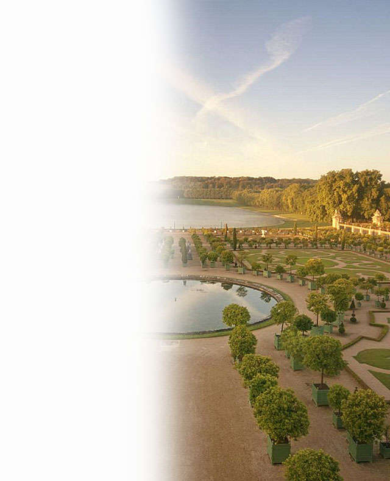

Der Park von
Versailles
Der Park von Versailles lässt sich wunderbar auf einem ausgedehnten Spaziergang erkunden. Zudem fahren alle 20 Min. nördlich der Schlossterrasse kleine Züge ab. Es gibt auch Pferdekutschen, einen Fahrrad- und Bootsverleih. Der Park ist das perfekte Modell französischer Gartenkunst: symmetrische Parterres, Skulpturengruppen, schnurgerade Alleen, geradlinig abgegrenzte Wasserflächen, die sich in der Weite der Landschaft verlieren. Diese majestätische Ordnung regierte schon den Park, den Philibert Le Roy vor dem Jagdschloss Ludwigs XIII. angelegt hatte. Le Nôtre gab der Gartenschöpfung dann ihre Weite und symbolische Bedeutung. Sie wurde 1661 begonnen, noch bevor Le Vau das Schloss vergrößerte.
Ludwig XIV. selbst hat eine Art Führer durch den Park verfasst: La Manière de monter les Jardins de Versailles. Folgen wir dem Rat des Königs und bewundern wir zunächst die Parterres, die sich vor der Schlossfassade der Strenge der Architektur beugen und deren Linien fortführen. Herrliche Bronzen, Flussgötter, Nymphen und Putti bevölkern die Wasserbecken. Von dieser Terrasse schweift der Blick ins Unendliche, über das silbrige Band des Grand Canal hinweg. Links vor dem Schloss liegt das Parterre du Midi mit seinen gepflegten Broderien und unterhalb die Orangerie. Rechter Hand begrenzt das Bassin de Neptun Garten und Blick.
Der Latona-Brunnen, eine zauberhafte Komposition an den Stufen zum Schloss, war für Ludwig XIV. ein Höhepunkt des Parkerlebnisses. Ein weiterer Point de vue ist das Bassin d'Apollon mit seiner grandiosen Skulpturengruppe von Jean Baptiste Tuby, eine Allegorie der absolutistischen Monarchie: Stürmische Rösser und Delphine tauchen aus dem Wasser, von Apoll-Ludwig XIV. fest an den Zügeln gehalten. Zu beiden Seiten der Hauptachse schließlich die Boskette, Rahmen höfischer Vergnügungen: le Bosquet des Rocailles, einst als >Ballsaal< genutzt und ganz mit Muscheln ausgekleidet, eine romantische Grotte, Bosquet des Bains d'Apollon genannt, und die elegante Kolonnade von Hardouin-Mansart mit einer berühmten Skulptur von Girardon im Zentrum.
Le Grand Trianon, dessen zwei Wohnflügel ein Peristyl aus rosa Marmor verbindet, ist ein Werk von seltener Grazie. Es wurde 1687 von Hardouin-Mansart für Ludwig XIV. und seine neue Favoritin, Madame de Maintenon, errichtet. Die meisten Räume besitzen noch ihre ursprünglichen Boiserien und sind mit Empire-Möbeln ausgestattet, eine glückliche Stilkombination. Le Petit Trianon (geöffnet wie Le Grand Trianon) wurde 1763-67 von Gabriel gebaut. Madame du Barry und später Marie-Antoinette schätzten diesen nüchternen Pavillon, dessen Parkfassade ein klassizistisches Meisterwerk ist. Im englischen Garten nördlich des Petit Trianon stehen verstreut einige Tempelchen, wie sie die Zeitgenossen von Jean-Jacques Rousseau so sehr liebten. Vor dem Hameau, einem künstlich angelegten >Dörfchen<, das Hubert Robert entwarf, grasten einst Ziegen und Schafe.
